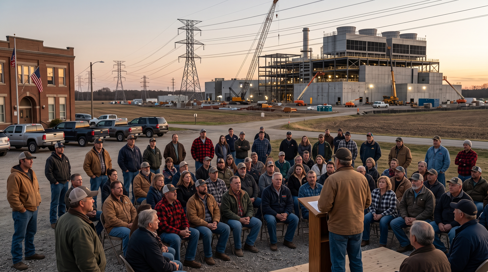
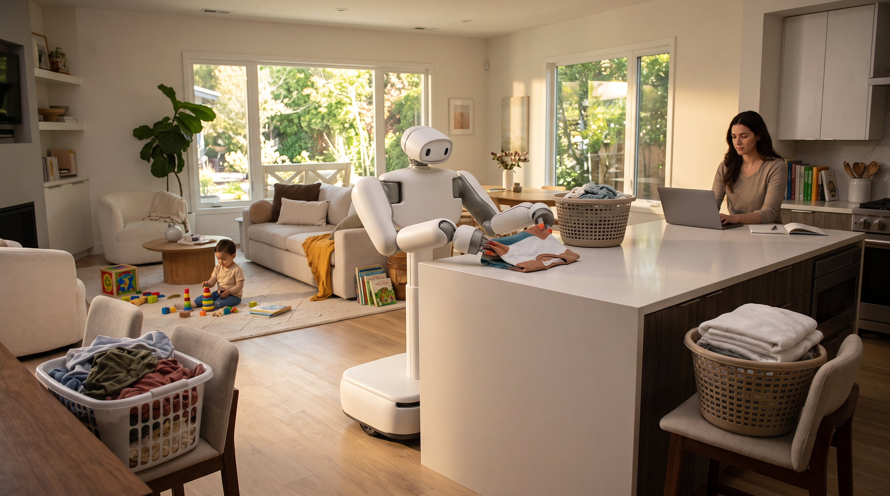

AI Policy
OpenAI's Public Stake Proposal Turns AI Wealth Into A Governance Problem
A reported public-equity idea reframes AI upside as a governance and legitimacy question.
Read draftTen draft articles and Nano Banana 2 cover images across AI governance, frontier models, search, chips, energy, robotics, labor, healthcare, and creative rights. These are review drafts, not published site articles.
A reported public-equity idea reframes AI upside as a governance and legitimacy question.
Read draftModel access is starting to look less like software distribution and more like controlled strategic infrastructure.
Read draftThe question is not only model parity, but whether Meta can turn capability into distribution.
Read draftGoogle's agent strategy moves from search results into the daily workspace.
Read draftNvidia is becoming more than a chip supplier in the AI cloud buildout.
Read draft
Compute supply now depends on local politics, energy planning, water, and land use.
Read draft
The home robot market is shifting from vague promise to specific price points and trust questions.
Read draftThe workplace AI story is not just job loss. It is role redesign, status, and training.
Read draftHospitals need inventory, monitoring, and accountability as AI devices and rules multiply.
Read draftThe AI music fight is becoming a market structure problem around consent and compensation.
Read draft